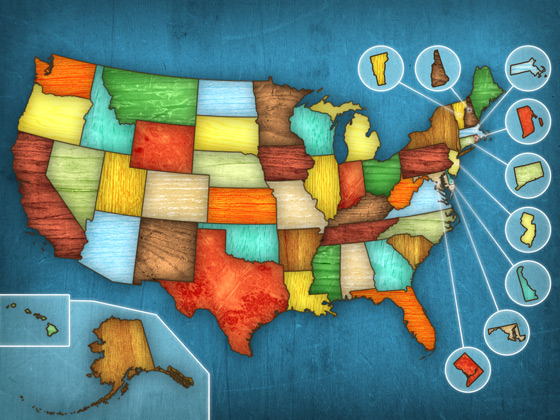
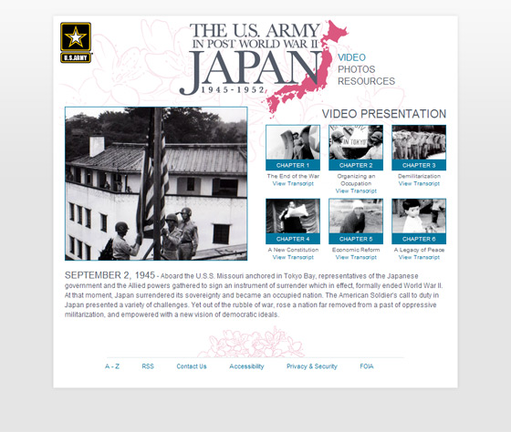
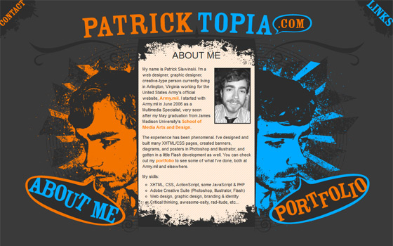

This color-shifting face was meant for one of the many PatrickTopia redesigns I've started in the last few years. The design didn't work out but I still enjoy the effect of the transparent PNG over the animated GIF. Of course the animation would be possible with CSS3 now, but this is the original effect.

I made this map for an iPad game I worked on with a friend. It's been put on the back burner for the time being.

The U.S. Army in Post World War II Japan was one I did quite some time ago now and is looking a bit dated, but I think the logo is one of the finest pieces of typography I've put together. You can get a good look on the poster.
For fun, I made this vector art of Stephen Colbert with the hope of having it printed on a t-shirt. Some hand screened shirts were eventually made, but I had made the lines much too fussy and thin to print particularly well. It's still a pretty nice piece of art though.
This was a vector illustration I made for a Christmas card a few years back, featuring myself and my special lady friend. I always love getting the chance to work with vectors.

Here's an old PatrickTopia design I'm rather fond of that I ended up not sticking with because I couldn't get it to work in IE6. Remember those days?